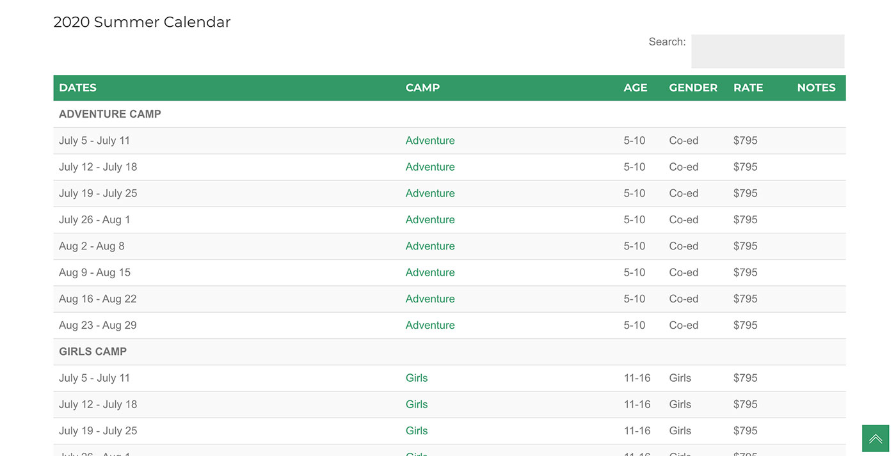
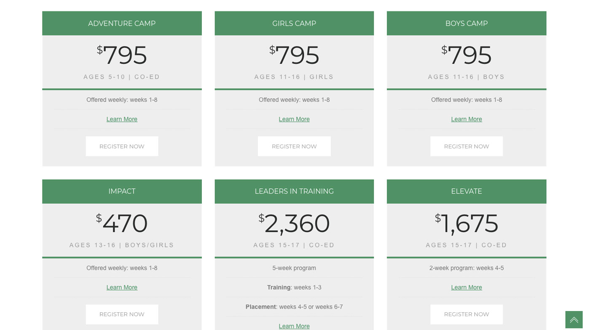
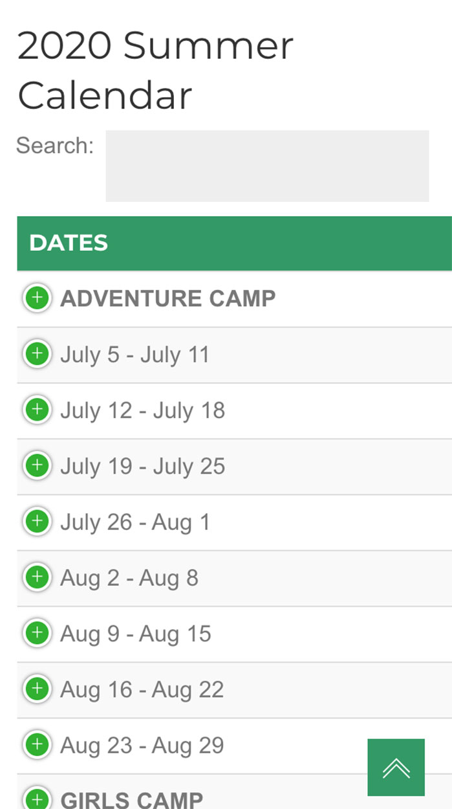
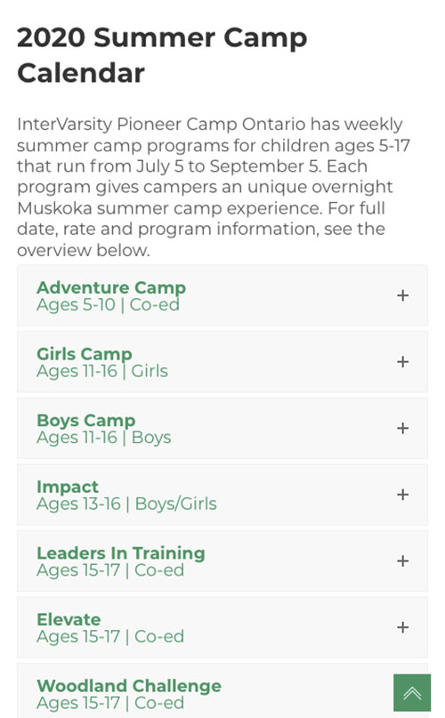
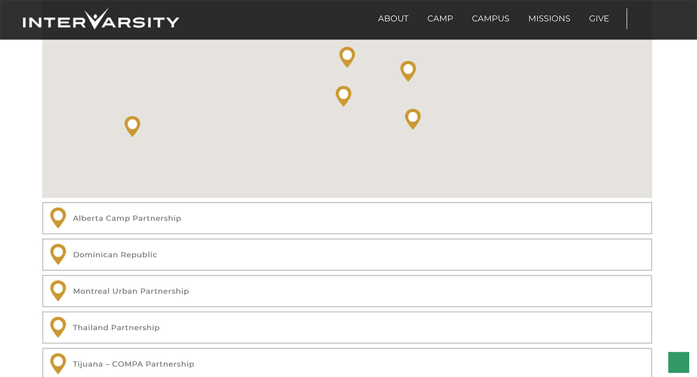
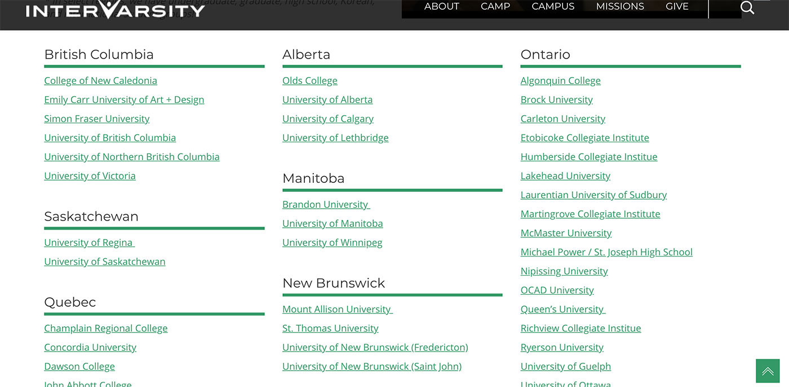

Redesigning the Experience
Web and UI/UX Design for InterVarsity Canada
InterVarsity Christian Fellowship Canada is a non-denominational Christian non-profit organization that focuses on work for youths and young adults. They have 9 summer camps and staff on university and college campuses to help guide youths in their journey of faith. As a Web Developer at IVCF (InterVarsity Christian Fellowship), I reorganized the already existing website content in a way that makes sense for both insiders and first-time visitors.
1. Usability Test for the New Calendar
IVCF has 9 summer camps, and all of them were hearing from parents who are keen to send their kids to camp say that the dates and rates are hard to find on their websites.
One problem is that all of IVCF's summer camp websites are currently using tables, which is outdated in web development standards, for the dates and rates information. Hence, no compatibility with mobile devices. And in effort to get to the core of other problems, I was able to conduct a rather simple usability test, which is to give three or more tasks to parents who are not very familiar with our websites and observe them.
Rates, or price, was one of the most crucial piece that parents look for that isn't explicitly highlighted on IVCF's camp websites. And there were insurmountable amount of content to scroll through, that the participants were overwhelmed and distracted by the quantity, especially on mobile devices.
To tackle the almost infinite scrolling and inconspicuous price, pricing table was used instead of the outdated table.
Using the pricing table was the perfect solution to reduce the amount of scrolling and highlight the price that most parents prioritize.
 Much more condensed and simple accordion was used for mobile devices, which also greatly decreased the time spent scrolling and brought the price and date to attention.
2. Find a Campus, Find a Mission, Find a Camp
The purpose of the three pages on IVCF's main website - Find a Campus, Find a Mission and Find a Camp - is to help people find a campus/mission/camp that is nearest to them. IVCF was using a map on the aforementioned pages to display all locations, which was not helpful for a few reasons; first, there were a surplus of locations to look through both on the map and the list below the map. Second, a map is hard to navigate on mobile devices unless it is an application like Google Maps.
Although the objective of all three pages are the same, each had to be taken with a different approach. Find a Campus page didn't need any supplementary information except some introductory content and links to pages for campuses that are connected to IVCF. It was critical for Find a Mission page to have fundraising amount, date, location, contact information and the link to apply. Find a Camp page only needed basic contact information for each camp.
After avid research, Find a Campus page was stripped of the map and had lists of campuses organized by provinces in Canada. This was much more effective for students, since they know which province their campuses are in. Moreover, scrolling through campus lists was much less work on mobile devices compared to using a map. All links are underlined to explicitly indicate that they are links.
Find a Camp became a simple page with contact information for each camp organized by province. And Find a Mission also has a new layout that highlights date, location, fundraising amount and contact information instead of a map.
3. UX Exercise for the New Donation Platform
Due to the lack of responsive design support and usability issues with their previous donation system, IVCF decided to implement a new donation platform; they were looking for the best way to do it while keeping the users in mind. I lead the team to gather data and create personas, in order to prevent from off-tracking with our own assumptions of what users would want.
We found out that when users navigate to the donation page, they go to it knowing what they're next step is going to be exactly, which is to donate. Thus, we decided to strip down any introductory information about the organization from the first section they will see as soon as they land on the page.
As an organization that aims at youth, it was important to keep the page not only functional, but also visually attracting. One of the branding elements that InterVarsity uses is a paint brush effect, which is in line with the boldness and vibrant youths. As a team, we made the decision to implement this effect on the page as well.

The page is designed with the consideration of users' gaze pattern. We kept the Z-pattern in mind; when someone lands on the page, the first thing they would notice is the logo; through this, they recognize the identity of the page. And they look right, where a link that takes them to the U.S. site lives. If irrelevant, they will look left again, where the text to further convince them to take action is. And the next thing a user will look to would be the donation form, where they can fulfill their objective, ever more convinced.
The embed form we used is made by iDonate.